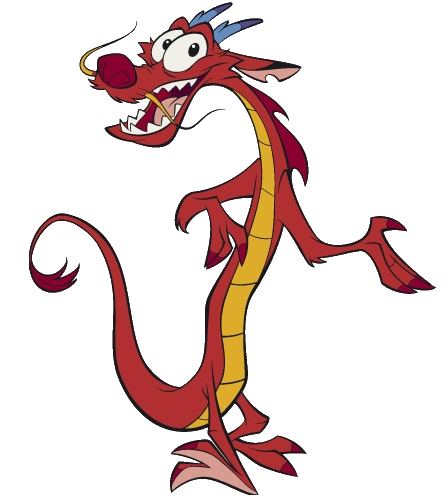

Mushu used to be a guardian spirit of the Fa family, but he had been demoted to the humiliating position of an incense burner and gong-ringer for the deceased Fa ancestors ever since he failed to protect a family member, a soldier named Fa Deng, resulting in the soldier's demise by decapitation (he is seen carrying his own head as a spirit). Mushu's reputation would suffer dearly from this, with the eldest of the ancestors refusing to even acknowledge Mushu as a "real dragon", evoking a bitter and eager-to-please side to his personality.

"I am the guardian of lost souls! I am the powerful, the pleasurable, the indestructible Mushu!"
What does it take to become the best soldier in the army? Let me teach you. Actually i'm a professional trainer myself. Listen to the song and answer the questions!
Click on me for your last destination!